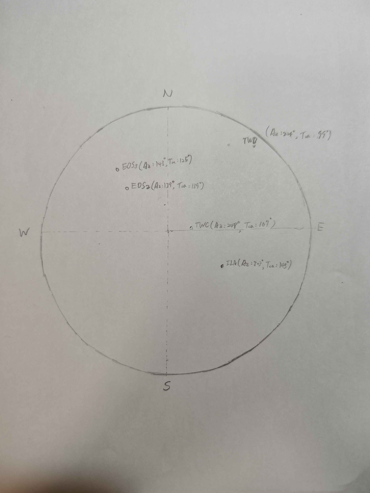
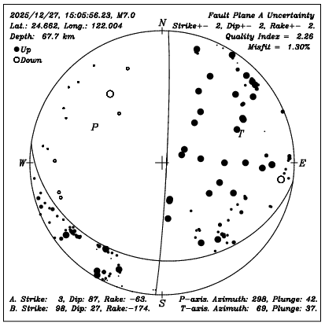

1. 測站資料解析 (P25 格式)
我們從測報中心的 24271505.P25 檔案中提取了測站的關鍵資料。在 P25 格式中，az 代表測站的方位角，而 toa 欄位結合了射線的出射角 (Take-off angle) 以及 P 波初動的上下動 (Polarity)。
當 P 波到達測站時，如果地表受到向上的推力，稱為壓縮 (Compression, 標記為 +)，通常在圖上畫實心點；若地表受到向下的拉力，稱為膨脹 (Dilatation, 標記為 -)，通常畫空心點。
| 測站代碼 (Station) | 方位角 (Azimuth) | 出射角 (Take-off Angle) | 上下動 (Polarity) | 意義 |
|---|---|---|---|---|
| TWC | 248° | 167° | + | 壓縮 (實心點) |
| ILA | 303° | 145° | + | 壓縮 (實心點) |
| EOS2 | 139° | 139° | - | 膨脹 (空心點) |
| EOS3 | 143° | 125° | - | 膨脹 (空心點) |
| TWD | 224° | 99° | + | 壓縮 (實心點) |
2. 教學：如何將測站投影到圓上？
這是一個基於等面積投影 (Schmidt Net) 開發的互動式投影工具。在畫節面之前，我們必須先把觀測點標上去！您可以將游標移至右側的測站上，看看它們在圖上的位置。
挑選的 5 個代表測站：
自訂點位投影計算機
3. 從測站點位到震源機制球
當我們把測站標記到投影圓上後，接下來的關鍵是**畫出兩條節面 (Nodal Planes)** 來區分壓縮區與膨脹區：
繪製與判斷訣竅
- 劃分區域：畫出兩條完美的大圓弧線 (節面)，將「實心點」與「空心點」盡可能劃分開來。
- 互相垂直：這兩個節面在 3D 空間中必須是互相垂直的。在輔助網 (Stereonet) 上，當您畫出第一條節面時，另一條節面必須穿過第一條節面的「極點 (Pole)」。
- 判斷斷層型態：
- 中心區域為實色 (壓縮) ➜ 逆衝斷層 (Thrust)
- 中心區域為空心 (膨脹) ➜ 正斷層 (Normal)
- 呈現十字交叉狀 ➜ 平移斷層 (Strike-slip)
以本案例為例
觀察上方互動投影圖中的點位分佈：
實心點 (TWC, ILA, TWD) 集中，而空心點 (EOS2, EOS3) 落在另一側。
為了將它們完美分開，我們會畫出走向約呈南北向的兩條弧線。這會使得**圖形中心被劃分在壓縮區 (實色)**，因此我們可以推斷這是一個**逆衝斷層 (Thrust Fault)** 的錯動機制！
4. 手繪成果與官方解答對照
這是我們依照上述步驟，將 5 個測站投影到立體投影網上並畫出節面的「手繪成果」，以及官方提供的「震源機制解參考圖」。
比對一下：我們的兩條互相垂直的節面是否將實心與空心完美區分開？中心是否落在實心壓縮區 (逆衝斷層) 呢？

▲ 我的手繪成果 (Hand-drawn Result)

▲ 官方參考解答圖 (Reference Solution)